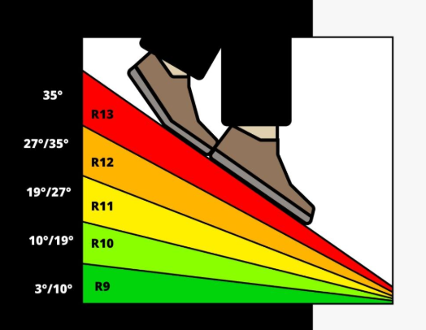

Posadzki żywiczne w przemyśle

Rodzaje systemów żywicznych stosowanych jako wykończenie posadzek przemysłowych oraz ich podstawowe właściwości użytkowe
Co to jest?
Posadzki żywiczne to warstwy ochronne i dekoracyjne wykonywane z żywic syntetycznych, takich jak epoksydowe, poliuretanowe lub MMA, stosowane na powierzchniach przemysłowych w celu zwiększenia trwałości, odporności chemicznej i mechanicznej podłoża.
Definicja
Posadzka żywiczna to chemicznie utwardzona, jednorodna warstwa syntetyczna stosowana jako wykończenie powierzchni podłogowych, odporna na ścieranie, chemikalia i obciążenia mechaniczne.
Dlaczego to ważne?
Posadzki żywiczne zapewniają bezpieczeństwo i długowieczność powierzchni przemysłowych. Chronią beton przed uszkodzeniami, ułatwiają utrzymanie czystości i pozwalają dostosować właściwości podłoża do środowiska pracy i rodzaju obciążeń.
Korzyści
| Korzyść | Opis |
|---|---|
| Odporność mechaniczna | Wytrzymują obciążenia statyczne i dynamiczne oraz intensywny ruch transportu wewnętrznego. |
| Odporność chemiczna | Chronią posadzkę przed olejami, smarami, kwasami i innymi substancjami chemicznymi. |
| Łatwość utrzymania | Gładka i szczelna powierzchnia ułatwia czyszczenie i spełnia wymagania higieniczne. |
Jak to zrobić?
Proces wykonania posadzki żywicznej wymaga właściwego przygotowania podłoża, doboru systemu żywicznego oraz prawidłowej aplikacji warstwy ochronnej.
Jaka żywica?
Dobór żywicy do posadzki przemysłowej zależy od obciążeń, środowiska pracy oraz wymagań eksploatacyjnych. W praktyce stosuje się trzy główne typy żywic: epoksydowe, poliuretanowe i MMA (metakrylan metylu). Każdy typ ma swoje zalety i ograniczenia.
Rodzaje żywic
Żywica epoksydowa
- Zalety: bardzo dobra przyczepność do betonu, wysoka odporność mechaniczna, gładka i szczelna powierzchnia
- Ograniczenia: średnia odporność UV, może żółknąć w świetle słonecznym
- Zastosowanie: hale produkcyjne, magazyny, laboratoria, strefy suche i średnio wilgotne
Żywica poliuretanowa
- Zalety: odporność chemiczna i mechaniczna, wysoka elastyczność, dobra odporność UV
- Ograniczenia: nieco trudniejsza aplikacja, wrażliwa na wilgotne podłoże przy nakładaniu
- Zastosowanie: strefy mokre, myjnie przemysłowe, posadzki z ruchem pieszym i wózkowym, ekspozycja na UV
Żywica MMA
- Zalety: szybki czas utwardzania, odporność na niskie temperatury, dobra odporność chemiczna
- Ograniczenia: wyższy koszt materiału, intensywny zapach podczas aplikacji
- Zastosowanie: posadzki szybkorozkładowe, remonty istniejących posadzek, miejsca wymagające szybkiego przywrócenia do eksploatacji
Krok 1: Przygotowanie podłoża
Przygotowanie podłoża to etap krytyczny dla przyczepności i trwałości powłoki żywicznej. Skupia się na parametrach mechanicznych i fizycznych podłoża, niezależnie od chemii żywicy.
- Oczyszczenie powierzchni: usunięcie kurzu, tłuszczu, olejów i luźnych fragmentów.
- Stabilizacja i naprawy: uzupełnienie ubytków, spękań, wzmocnienie struktury betonu w razie potrzeby.
- Szlifowanie lub frezowanie: poprawa przyczepności poprzez zwiększenie chropowatości powierzchni.
- Suszenie i kontrola wilgotności: podłoże powinno być suche i w dopuszczalnym zakresie wilgotności zgodnie ze specyfikacją producenta żywicy.
- Gruntowanie: stosowane, jeśli producent systemu wymaga zastosowania preparatu poprawiającego przyczepność żywicy.
Zasada inżynierska: prawidłowe przygotowanie podłoża jest podstawą trwałości posadzki – błędy w tym kroku mogą skutkować odspajaniem lub pękaniem powłoki, niezależnie od jakości samej żywicy.
Krok 2: Dobór systemu żywicznego
Na podstawie oceny warunków eksploatacji i środowiska pracy określ, który system żywiczny jest odpowiedni:
- Zidentyfikuj typ obciążeń (np. statyczne, dynamiczne, chemiczne).
- Dobierz żywicę zgodnie z wymaganiami:
- Epoksydowa – preferowana dla ogólnych obciążeń mechanicznych i chemicznych w strefach suchych lub umiarkowanych.
- Poliuretanowa – wybierana tam, gdzie jest większa elastyczność, odporność UV lub wilgotność.
- MMA / Poliurea – tam, gdzie ważny jest czas instalacji i szybkie utwardzanie lub ekstremalne warunki pracy.
- Zdefiniuj parametry wykonawcze systemu: grubość powłoki, wykończenie powierzchni, klasę antypoślizgowości.
Dzięki temu wykonawca uzyska jasną i jednoznaczną decyzję w specyfikacji, bez powtórzenia definicji i właściwości materiałów.
Krok 3: Aplikacja i wykończenie
Po przygotowaniu podłoża następuje aplikacja powłoki żywicznej, która jest procesem ściśle chemicznym i technologicznym. Tutaj decydują parametry receptury producenta, a nie tylko cechy mechaniczne podłoża.
- Receptura producenta: skład chemiczny, proporcje komponentów, czas reakcji i utwardzania są krytyczne. Błędy w mieszaniu lub zastosowaniu niewłaściwych dodatków mogą prowadzić do awarii powłoki.
- Parametry aplikacji: temperatura podłoża i powietrza, wilgotność, wentylacja oraz czas otwarcia żywicy muszą być zgodne z zaleceniami producenta.
- Technika nakładania: wałek, rakla lub natrysk zgodnie z instrukcją – kontrola grubości warstwy, równomierności i eliminacja pęcherzyków powietrza.
- Efekt końcowy: powłoka osiąga deklarowane właściwości mechaniczne i chemiczne, odporność ścierną, antypoślizgową oraz wykończenie powierzchni (mat, półmat, połysk).
Zasada inżynierska: przygotowanie podłoża zapewnia prawidłową przyczepność, natomiast właściwa aplikacja i przestrzeganie receptury producenta gwarantują osiągnięcie wymaganej trwałości i funkcjonalności posadzki. 💡 Wnioski inżynierskie: aplikacja posadzki żywicznej to proces chemiczny, nie tylko mechaniczny — każdy system producenta ma swoje specyficzne wymagania i tolerancje. Zachowanie parametrów receptury jest kluczowe dla uzyskania właściwej eksploatacji posadzki.
Uwaga
Nieprawidłowe przygotowanie podłoża lub niewłaściwy dobór systemu żywicznego może prowadzić do odspajania się posadzki, powstawania pęknięć i szybkiej utraty właściwości mechanicznych oraz chemicznych.
Wskazówki dla BIM
W specyfikacji wykończenia żywicznego warto uwzględnić praktyczne parametry, które są jednoznaczne dla wykonawcy i inwestora:
- Typ żywicy – epoksydowa, poliuretanowa, MMA lub hybrydowa
- Grubość warstwy – minimalna i zalecana grubość powłoki w mm
- Odporność mechaniczna – dopuszczalne obciążenia statyczne i dynamiczne
- Odporność chemiczna – lista substancji agresywnych i odporność powierzchni
- Właściwości powierzchni – gładkość, wykończenie (mat/błysk)
Antypoślizgowość
- Klasa R według normy DIN 51130 – określa odporność powierzchni na poślizg:
- R9 – powierzchnie lekko śliskie, np. biura, magazyny z niskim ruchem, podłoże suche
- R10 – standardowa odporność, np. hale produkcyjne, lekkie stanowiska pracy z wilgotnym podłożem
- R11 – wyższa odporność, np. miejsca z wodą, olejem, częstym ruchem wózków, rampy
- R12 – bardzo wysoka odporność, np. strefy mokre i tłuste, myjnie przemysłowe, laboratoria
- R13 – najwyższa odporność, np. ekstremalne warunki przemysłowe, podłoża wyjątkowo śliskie
- Dodatki antypoślizgowe: piasek kwarcowy, mikrokulki ceramiczne – stosowane w żywicy w celu zwiększenia klasy R
- W specyfikacji BIM: warto podać klasę R oraz typ dodatku antypoślizgowego, aby jednoznacznie wskazać wymagane bezpieczeństwo i fakturę powierzchni
- Warunki aplikacji – temperatura, wilgotność, czas utwardzania
- Powiązanie z podłożem – wymagania co do przygotowania betonu lub istniejącej posadzki
Takie parametry pozwalają jednoznacznie zaplanować prace, dobrać materiały i kontrolować jakość na budowie, jednocześnie dostarczając inwestorowi klarowne informacje o trwałości i właściwościach posadzki.
